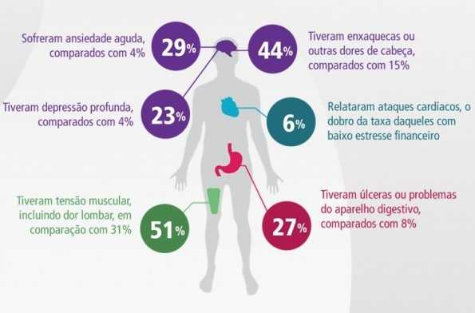

Desvantagens
Seja qual for a sua situação financeira, é inegável que lidar com as finanças pessoais pode ser um desafio. Nesta página, exploraremos algumas das desvantagens e consequência que podem surgir quando se trata de gestão financeira. É importante lembrar que cada pessoa enfrenta desafios financeiros únicos, mas algumas desvantagens podem ser comuns a muitos indivíduos. Por exemplo, uma das principais dificuldades enfrentadas por muitos é a falta de conhecimento ou educação financeira adequada. Sem entender conceitos fundamentais e estratégias de gestão financeira, pode ser difícil tomar decisões informadas sobre gastos, investimentos e economias. Então, quando falamos de uma falta de gestão financeira, nos deparamos com uma consequência que pode afetar não só o seu bolso, como também sua saúde física e mental.
Malefícios à saúde
Uma pesquisa americana, da PFEEF (2012), traz as implicações do estresse financeiro para a saúde: 29% das pessoas que têm problemas financeiros sofrem de ansiedade aguda e 23% tiveram depressão profunda, ambos contra 4% das pessoas que têm o orçamento organizado. Outro dado relevante é que 44% de pessoas com problemas financeiros sofrem de enxaqueca ou outras dores de cabeça contra 15% dos indivíduos que possuem as contas em dia; e 27% tiveram úlceras ou outro problema no aparelho digestivo, contra 8% dos planejados financeiramente. Veja a imagem abaixo. "Nome sujo"
A facilidade de acesso ao crédito e a cultura do consumo podem levar as pessoas a gastar além de suas possibilidades, acumulando dívidas que se tornam difíceis de gerenciar. Estas dívidas, se não pagas, ocasionam no que chamamos de inadimplência. A principal consequência da inadimplência é ter o nome apontado nos serviços de proteção ao crédito ou, como é popularmente conhecido, ficar com o “nome sujo“. Mas quais são as consequência de ter o nome sujo? O vídeo a seguir irá explicar melhor sobre este status que assombra milhões de Brasileiros.